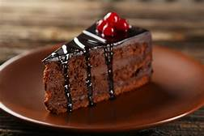
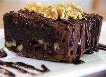

Vienvenido a tu pagina de resetas favoritas
pastel de choolate
tarta de naraja
lemon pie
brownies
Nueces y Almendras Confitadas
la mejor reseta de almedras y nuezes confitadas
Lista de ingrediente
-Nueces y almendras, peladas
Almíbar: 1 litro de agua y 1 kilo de azúcar
Ve una imagen de como queda , un videos tutorial, localizacion de la reseta tipica

Pastel de chocolate
Observa nuestras otras resetas de comidas
Go
Tarta de naranja
Observa nuestras otras resetas de comidas
Go
lemon pie
Observa nuestras otras resetas de comidas
Go

brownies
Observa nuestras otras resetas de comidas
Go
Contactanos